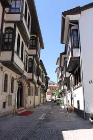
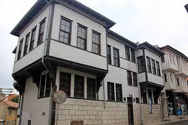

7 bin yıllık geçmişiyle önemli medeniyetlere ev sahipliği yapmış, tarihi bugüne dek canlı tutmayı başarabilmiş olan Kütahya; konakları, çeşmeleri, medreseleriyle bugün hala tarihi yaşayan ve yaşatan şehir aynı zamanda…Tarihin en güzel yaşandığı ve yaşatıldığı yerlerin başında ise 19. yüzyıl sivil mimarinin en güzel örneklerinin yer aldığı Germiyan Sokağı geliyor.Hızla yükselen binalara inat hala tarihi dokusunu ve güzelliklerini koruyan, tarihi konaklarıyla geçmişten günümüze ayna tutan Germiyan Sokağı, kent merkezine sadece 5 dakika uzaklıkta.


 "Kütahya"ya dönmek için basın
"Kütahya"ya dönmek için basın